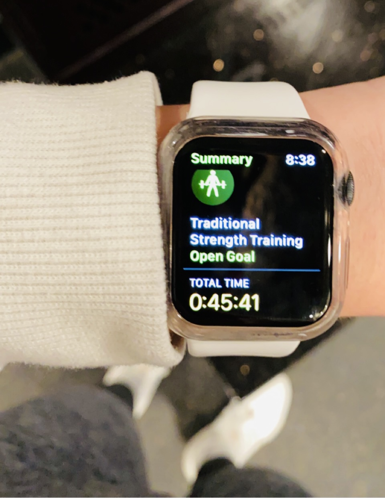
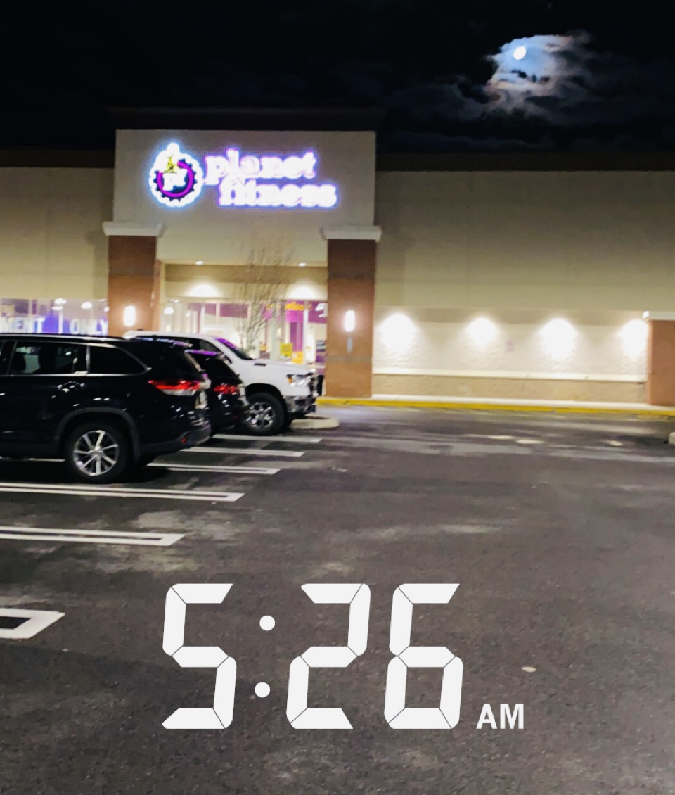
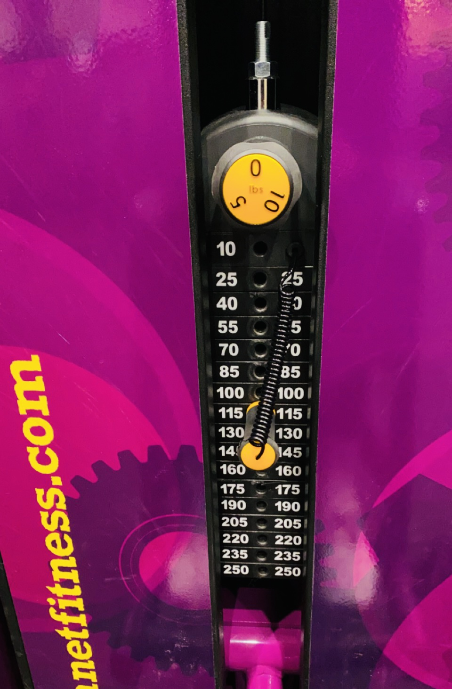
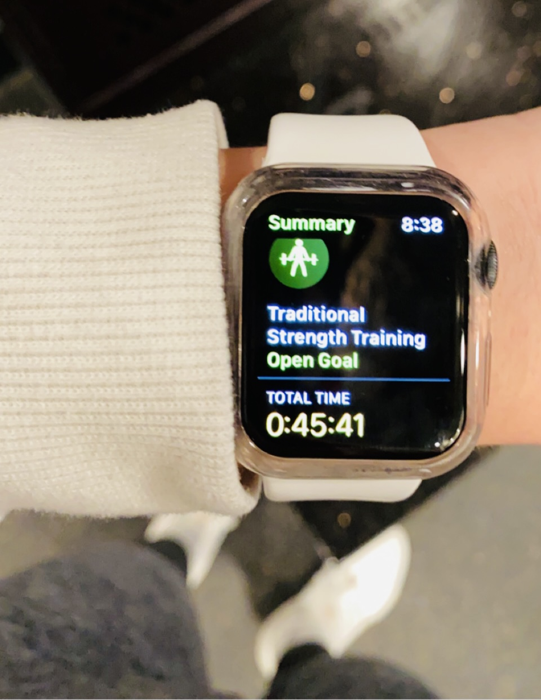
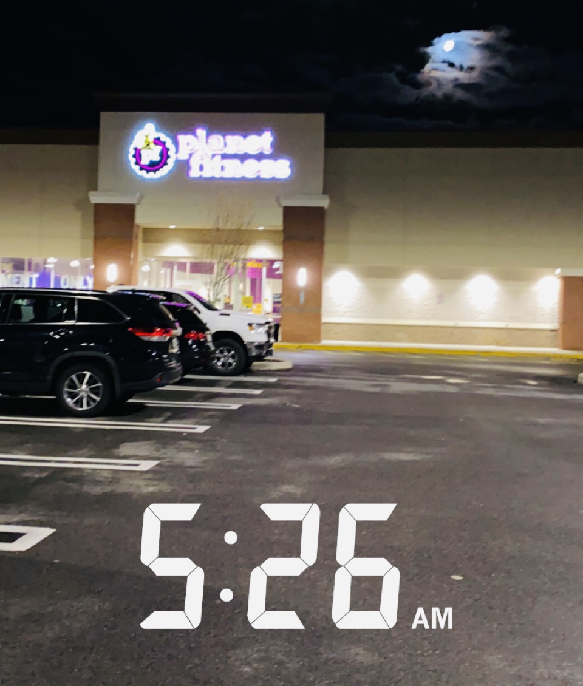
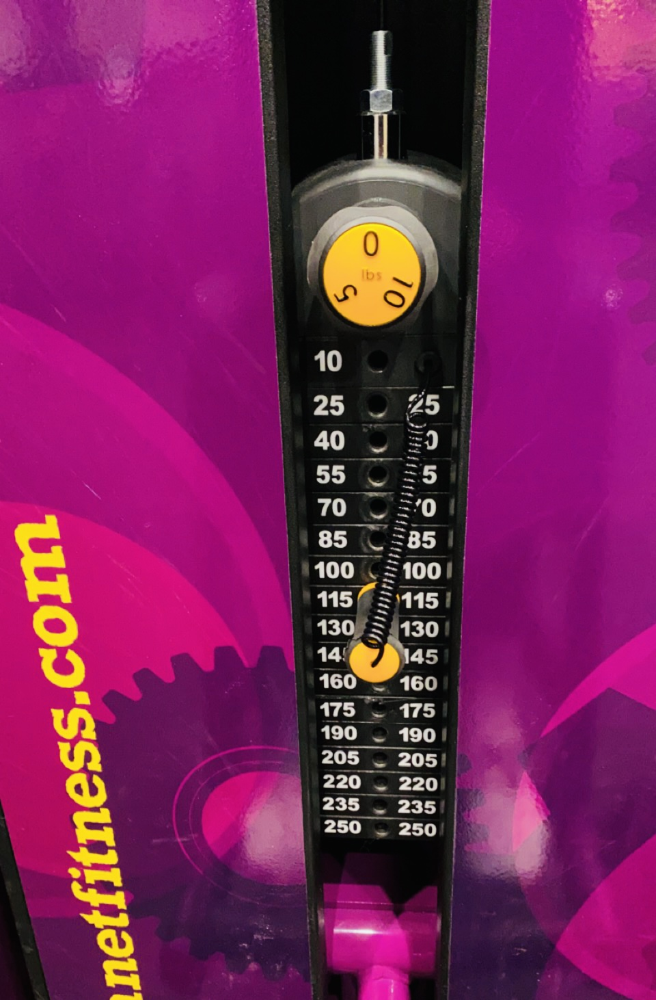

One thing that I like to do to motivate myself is to look at things that inspire me! Looking at inspirational photos, quotes, and other motivational people can help push you to want to be the best version of yourself!
I usually like to make a mood board/goal board filled with pictures that are inspiring or even add my own pictures to keep me motivated.
A mood board of Inspirational/Motivational Photos:

 




